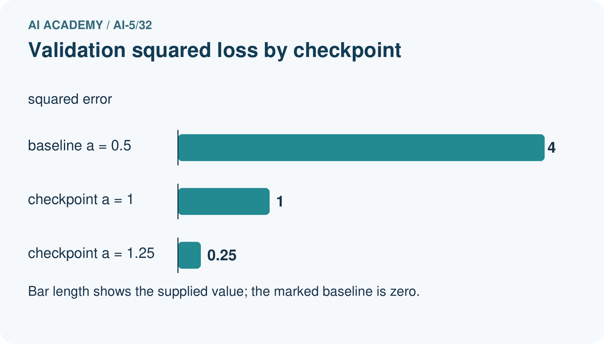
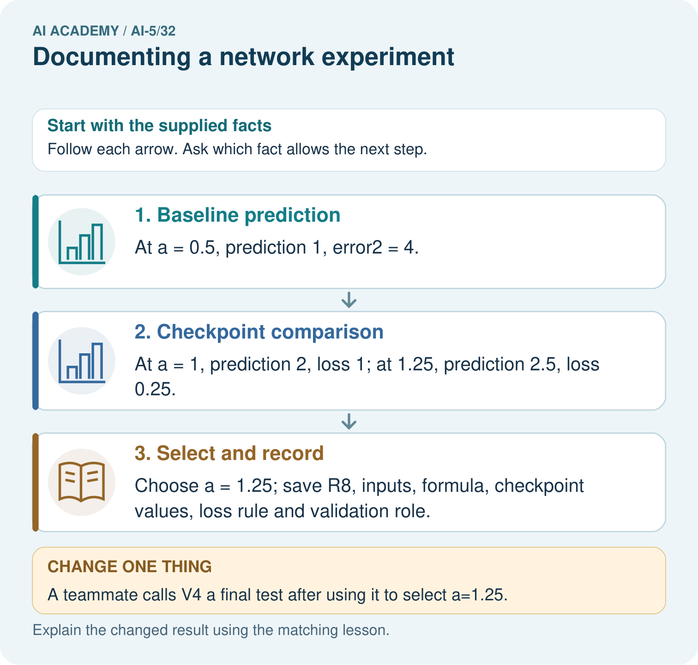
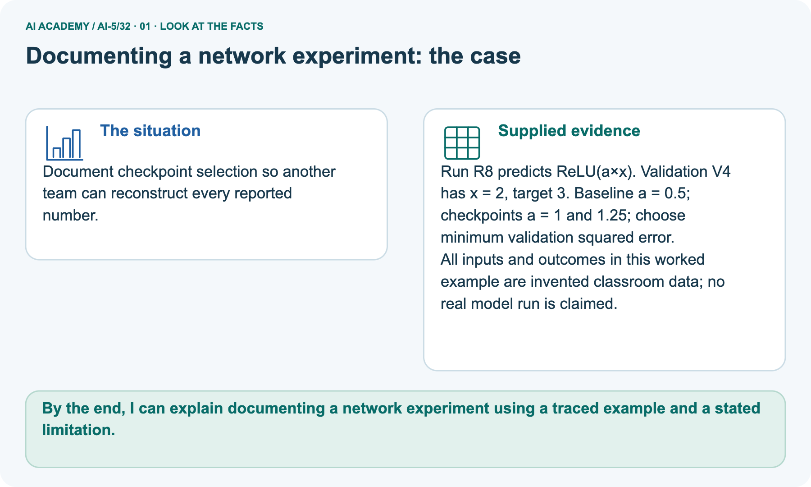
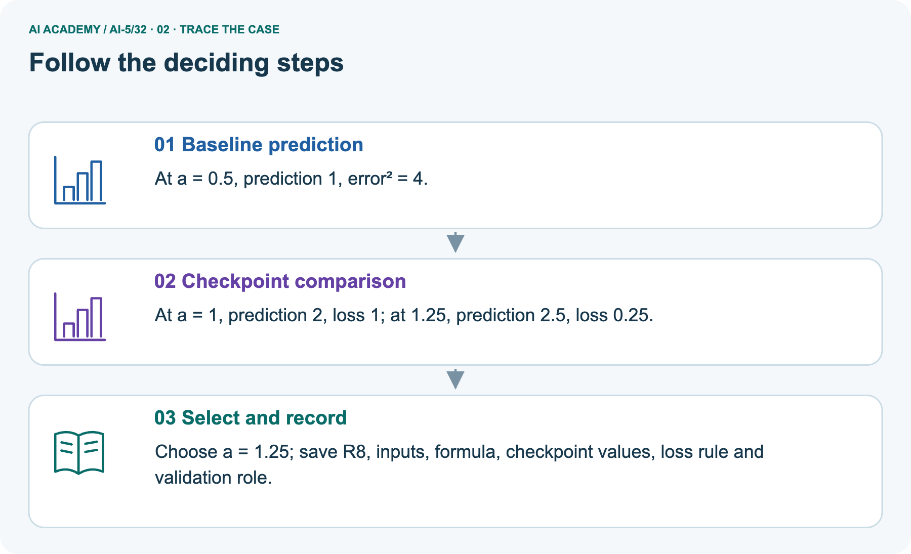
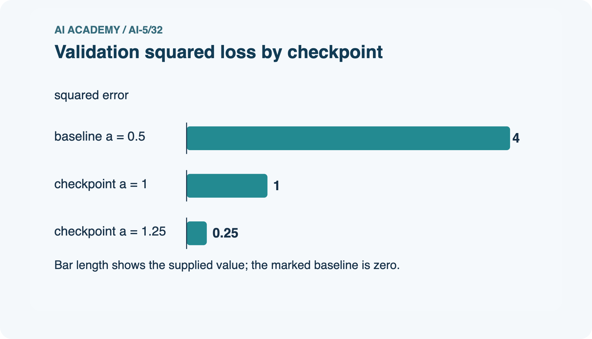
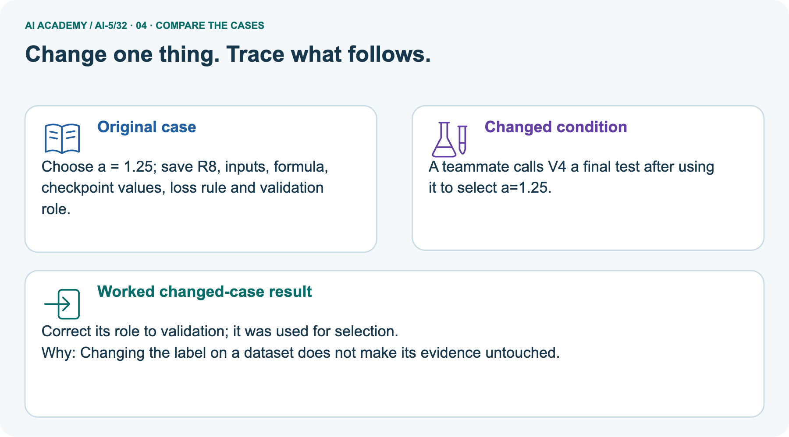

AI Academy · Level 5 · Grade 10 · Week 32 · Student lesson
Documenting a network experiment
Learn to understand, design, build, test and explain AI systems responsibly.
Project: Image-pattern Network Investigation
Before you start
Why is “the model was fast and accurate” insufficient as an experiment record?
Plan time to read, investigate and explain. Keep predictions separate from observations.
Student lesson · 1 of 18
Your mission
Start with the target: Record a network experiment with enough detail to replay its calculations. Try the recall before opening notes.
Your learning target
I can record a network experiment with enough detail to replay its calculations.
I can trace reported metrics to data roles and saved parameters.
I can write a bounded conclusion and identify missing evaluation evidence.
Remember before reading
Close your notes first. A rough first answer helps us choose the right starting point; it is not a score for your ability.
Without opening the old lesson, explain one key idea from Efficiency and resource measurement. Give an example and a mistake that the idea helps you avoid.
Without opening the old lesson, explain one key idea from Uncertainty and failure analysis. Give an example and a mistake that the idea helps you avoid.
Without opening the old lesson, explain one key idea from Embeddings and neighbourhoods. Give an example and a mistake that the idea helps you avoid.
After trying, check the relevant lesson or ask your teacher. Change the part of your explanation that the evidence shows was wrong.
This week you will practise:
Record a network experiment with enough detail to replay its calculations
Trace reported metrics to data roles and saved parameters
Write a bounded conclusion and identify missing evaluation evidence
Retrieve what you already know
Why is “the model was fast and accurate” insufficient as an experiment record?
This week’s end goal
By the end, I can explain documenting a network experiment using a traced example and a stated limitation.
Student lesson · 2 of 18
Notice the evidence
Investigate the supplied Documenting a network experiment case. Separate observations, given facts and assumptions before choosing an explanation.
A useful experiment record explains what was asked, what was done, what happened and what remains unknown.
Use run NN32-A: does fitting one positive ReLU weight reduce validation mean squared error compared with its initial value?
This tiny constructed regression task teaches record keeping; it cannot establish performance on real-world data.
| Data role and ID | Input x | Target y |
|---|---|---|
| Training T1 | 1 | 2 |
| Training T2 | 2 | 4 |
| Validation V1 | 3 | 6 |
The network predicts max(0, a*x), with one weight a and no bias. Start at a = 1, use learning rate 0.1, two full-batch training updates and mean squared error, the mean of squared prediction errors.
There is no normalisation, random initialisation or shuffling. Use Python float arithmetic and record the actual Python version when replaying.
Before running, set the selection rule: choose the checkpoint with the smaller validation MSE, breaking a tie toward the earlier update. The initial model is the baseline.
Validation V1 chooses a checkpoint but never contributes to the training gradient. Final evaluation has not been run; its result must be recorded as not measured.
Student lesson · 3 of 18
See how it works
Follow the mechanism for Documenting a network experiment. Connect each labelled input, deciding step and result.
For these two training cases, MSE = 2.5*(a - 2) squared and its gradient is 5*(a - 2). At a = 1 the gradient is -5, so the first update is 1 - 0.1*(-5) = 1.5. The next gradient is -2.5, giving a = 1.75.
All preactivations in this run stay positive, so ReLU’s derivative is one; this is not a general backpropagation implementation.
train = [(1.0, 2.0), (2.0, 4.0)]
validation = [(3.0, 6.0)]
def predict(a, x):
return max(0.0, a*x)
def mse(a, rows):
return sum((predict(a, x)-y)**2 for x, y in rows) / len(rows)
a, rate = 1.0, 0.1
baseline = mse(a, validation)
records = []
for update in [1, 2]:
gradient = sum(2*(a*x-y)*x for x, y in train) / len(train)
a -= rate * gradient
records.append((update, a, mse(a, train), mse(a, validation)))
chosen = min(records, key=lambda r: (r[3], r[0]))
print(baseline, records, chosen[0])The code assumes the supplied nonempty numeric datasets and positive preactivations. Each record stores update number, weight, training MSE and validation MSE after the update.
Keep both records, the initial weight and the rule; saving only the best score erases how the choice was made.
Connect the picture and the explanation
Point to the input, the deciding step and the result in this week’s visual. Explain the same step in ordinary words. A picture helps when you can say what each part represents.
Student lesson · 4 of 18
Compare the cases
Compare the supplied cases for Documenting a network experiment. Identify the detail that changes the conclusion.
Compare a familiar case with a changed case
Calculate both weight updates and give each training and validation MSE. Name the selected checkpoint and baseline validation MSE. How many independent validation examples support the comparison?
Change one thing in the pictured case
Change one thing
Change: A teammate calls V4 a final test after using it to select a=1.25.
Predicted result
Prediction: Correct its role to validation; it was used for selection.
Why the result follows
Reason: Changing the label on a dataset does not make its evidence untouched.
Student lesson · 5 of 18
Words that unlock the idea
Use the vocabulary of Documenting a network experiment to explain a concrete decision, rather than only memorising definitions.
| Word | Meaning |
|---|---|
| Run identifier | A unique label linking one experiment’s settings, outputs and records |
| Checkpoint | Saved model parameters at a specified stage of training |
| Manifest | An inventory connecting named artifacts with versions, roles and integrity information |
| Replay | Repeating a recorded procedure to check whether its outputs agree |
Student lesson · 6 of 18
Follow a worked example
Follow the worked trace for Documenting a network experiment, predict a step, then compare with its explanation.
Read each checkpoint against the same validation case
Worked explanation · Documenting a network experiment
A defensible conclusion is: in run NN32-A, update 2 reduced MSE on the single constructed validation case from 9 to 0.5625 compared with the initial model.
This checkpoint was selected using that same validation case; generalisation is untested. No timing, peak-memory or energy measurements are provided.
Learn from the worked case
Cover the result before checking it. Say what is given, choose the procedure, and follow one step at a time. Then uncover the result and explain your first mismatch. Ask why a step is allowed, not only what number it produces.
A pictorial worked case: Documenting a network experiment
Document checkpoint selection so another team can reconstruct every reported number.
The facts we will use
Supplied facts
Run R8 predicts ReLU(a×x). Validation V4 has x = 2, target 3. Baseline a = 0.5; checkpoints a = 1 and 1.25; choose minimum validation squared error.
Supplied facts
All inputs and outcomes in this worked example are invented classroom data; no real model run is claimed.


Read the picture one step at a time
Why this result follows
Why the result follows
A reproducible record includes the actual input, formula, parameters and scoring rule, together with each dataset’s role. The validation case selects the best supplied checkpoint, so it is part of development.
Save that selection history and freeze the checkpoint before evaluating fresh final cases. Renaming the same case a test does not change how it was used.
What this example does not establish
Keep the stated limit
Reconstructing one run verifies arithmetic and provenance, not population performance or educational learning impact.
Keep the stated limit
Read the labelled picture: What additional evidence is needed for a final performance claim? Point to the relevant step in the picture, then write the changed result and the rule or evidence that supports it.
Keep the stated limit
Change one thing: A teammate calls V4 a final test after using it to select a=1.25. Predict the result before checking the explanation. What remains the same?
Student lesson · 7 of 18
Find and repair a mistake
Find the unsupported step in the Documenting a network experiment claim and explain a repair using the supplied evidence.
Check the claim against the facts
Keep a manifest for the data with IDs and split membership, the exact code, settings, every checkpoint, raw prediction rows and metric calculations.
Add run ID, author/date, environment versions, known data provenance and permitted use, failed attempts, decisions and limitations.
A descriptive filename helps navigation, but does not prove that file contents stayed unchanged.
Check the claim against the facts
When saving artifacts, record their content hashes and keep the exact versions used. Hashes help detect content changes; they do not prove label correctness or experiment quality.
Retain the input order, any training-fitted preprocessing, model architecture and numeric precision.
Randomised experiments must also record seeds and the relevant random operations; a seed alone does not guarantee identical results across environments.
Check the claim against the facts
Ask a partner to replay from the record rather than from memory. If results differ, check inputs, split membership, preprocessing, configuration, code, parameters and environment.
Document the discrepancy and the repair instead of overwriting the old record. A rerun on the same data checks the procedure; it does not add new independent evaluation cases.
Locate the earliest unsupported step
A folder contains only best-model.json and a screenshot of 0.5625. Identify four missing artifacts or records and explain what a content hash can and cannot verify.
Student lesson · 8 of 18
Practise together
Practise Documenting a network experiment with support, then explain the deciding step in your own words.
For NN32-A, record the prediction rule, initial weight, bias policy, learning rate, update count, loss, training/validation IDs, data order or shuffling policy, and checkpoint selection rule.
Name one environment field still to record when you run it.
Practise with less help: Trace the selected result
Use workbook W2 for the connected example “Documenting a network experiment”. First fill the input and rule boxes. Try the middle steps before asking for a hint. After a hint, try the next step yourself.
| Plan | Do | Check |
|---|---|---|
| What is given? Which rule or procedure applies? | Record each intermediate step. | Does the result follow? What remains unknown? |
Explain your trace to a partner. Your partner points to one step to check. Swap roles on the next case. Each person writes their own explanation.
Check your reasoning
Use the worked case for Documenting a network experiment. Proposed explanation: “A smaller MSE is an accuracy percentage”. Decide whether this explanation is supported.
Point to the step or supplied fact that decides; explain your repair if needed.
Answer on your own before discussion. If you are unsure, say which step you need help with.
Explain the picture
What additional evidence is needed for a final performance claim? Point to the relevant step in the picture, then write the changed result and the rule or evidence that supports it.
This is supported practice. Keep the separately named independent case for an attempt before feedback.
Student lesson · 9 of 18
Run the investigation
Investigate Documenting a network experiment. Record the prediction, actual observation or labelled paper trace, explanation and next test separately.
Predict, investigate and preserve the evidence
Calculate both weight updates and give each training and validation MSE. Name the selected checkpoint and baseline validation MSE. How many independent validation examples support the comparison?
train = [(1.0, 2.0), (2.0, 4.0)]
validation = [(3.0, 6.0)]
def predict(a, x):
return max(0.0, a*x)
def mse(a, rows):
return sum((predict(a, x)-y)**2 for x, y in rows) / len(rows)
a, rate = 1.0, 0.1
baseline = mse(a, validation)
records = []
for update in [1, 2]:
gradient = sum(2*(a*x-y)*x for x, y in train) / len(train)
a -= rate * gradient
records.append((update, a, mse(a, train), mse(a, validation)))
chosen = min(records, key=lambda r: (r[3], r[0]))
print(baseline, records, chosen[0])| Record | Your evidence |
|---|---|
| Given input and fixed rule | |
| Prediction before checking | |
| Actual result, or “not run” | |
| First mismatch and one explanation | |
| Boundary or missing input and expected response |
On paper, trace the supplied procedure. If code is provided, predict before running it in a local practice file. Never write an expected answer as though it were an observed run.
Plan → try → check
Before trying: what do I expect, and why? While trying: which step could first go wrong? Afterwards: what did I actually observe, and what should change? Keep “not run” if you only traced the procedure.
Student lesson · 10 of 18
Build your understanding
Move from recall to tracing, diagnosis and transfer in Documenting a network experiment. Explain why each step is justified.
Explain → apply → challenge
For NN32-A, record the prediction rule, initial weight, bias policy, learning rate, update count, loss, training/validation IDs, data order or shuffling policy, and checkpoint selection rule.
Name one environment field still to record when you run it.
A folder contains only best-model.json and a screenshot of 0.5625. Identify four missing artifacts or records and explain what a content hash can and cannot verify.
A partner gets different results after changing preprocessing and replacing the validation file. They keep the old run ID and overwrite the old score.
Explain what should be preserved and how the revised work should be recorded.
Student lesson · 11 of 18
Connect your project
Apply this week’s idea to Image-pattern Network Investigation. Keep an annotated decision and the evidence supporting it.
Add a labelled documenting a network experiment evidence sheet to Image-pattern Network Investigation. Show how you can record a network experiment with enough detail to replay its calculations.
Use the supplied fictional case and keep its inputs, intermediate steps, calculation or prediction, and limitation. Connect this record to last week’s record; a matching answer without a trace is insufficient.
| Project evidence | Record |
|---|---|
| Component and version | |
| Inputs permitted at prediction time | |
| Trace and comparison with earlier work | |
| Failure, limit and human review |
Evidence for your project
For your Image-pattern Network Investigation, save the input, procedure, observed result and limitation of this check.
Label this worked example as practice; use a different, previously unreviewed case when checking independent understanding.
Student lesson · 12 of 18
Show what you know
Use a genuinely new case for independent evidence. Previously discussed examples remain practice; use the separately named independent case before feedback.
Report missing measurements as not measured, not as zero. If a final set has influenced a change, document that use and reserve new untouched evaluation before making an independent performance claim.
A polished report cannot fix leakage or missing evidence. For larger experiments, preserve denominators, subgroup results and resource conditions from Weeks 29 to 31.
Finish with a next action that follows from the limitations, such as planning a broader reserved evaluation without claiming it has already succeeded.
Next week begins the capstone by defining a hypothesis and baseline before controlled experiments.
A partner gets different results after changing preprocessing and replacing the validation file. They keep the old run ID and overwrite the old score.
Explain what should be preserved and how the revised work should be recorded.
Student lesson · 13 of 18
Study a complete case
Revisit the complete Documenting a network experiment case for supported practice. Repeated examples do not become fresh assessments.
Complete evidence record
Read each checkpoint against the same validation case
Follow the input through the stated procedure to its result. Cover the result first, predict it, then explain every intermediate step. The text/table accompanies the figure so the example can be read without colour.
Student lesson · 14 of 18
Try a new case independently
Attempt the reserved new case before feedback. Record support; the earlier examples below remain additional practice.
Independent case: Audit a new record independently
A separate run R17 records baseline a = 1 and checkpoints a = 1.5 and a = 1.75. It uses prediction max(0, a*x) and one validation case V9 with x = 4, y = 8.
Compute baseline and checkpoint predictions and squared errors, choose by lowest validation MSE, and write a bounded conclusion. Final evaluation and runtime have not been measured.
Attempt this case before feedback. Record any help. Earlier examples below are further practice; a case already practised with feedback cannot establish fresh transfer.
Attempt this without hints
A separate run R17 records baseline a = 1 and checkpoints a = 1.5 and a = 1.75. It uses prediction max(0, a*x) and one validation case V9 with x = 4, y = 8.
Compute baseline and checkpoint predictions and squared errors, choose by lowest validation MSE, and write a bounded conclusion. Final evaluation and runtime have not been measured.
Record support used: none, hint or teacher explanation. After feedback, a different case is needed to demonstrate independence.
Use feedback to improve
Attempt the independent case before hints. Record whether you worked alone, used a hint or followed a model. After feedback, fix the first unsupported step and explain why it changed.
A later check uses a changed case, not a copied answer.
Student lesson · 15 of 18
Your lesson route
Use this map to navigate Documenting a network experiment, connect the goals to tasks and keep one evidence record for each attempt.
Start with this question: Document checkpoint selection so another team can reconstruct every reported number.
| By the end, I can | How I will show it |
|---|---|
| Record a network experiment with enough detail to replay its calculations | Explain the deciding step, show a trace or test, and state one limit. |
| Trace reported metrics to data roles and saved parameters | Explain the deciding step, show a trace or test, and state one limit. |
| Write a bounded conclusion and identify missing evaluation evidence | Explain the deciding step, show a trace or test, and state one limit. |
Remember → watch and explain → try with help → investigate → try independently → keep project evidence. Your teacher may spread this lesson across several classes.
Keep your first prediction. Compare it with what the evidence shows and explain any change.
Student lesson · 16 of 18
Finish and return
Explain Documenting a network experiment without notes, identify a remaining question and plan a later check with a changed case.
Close your notes. Explain this goal in your own words: Record a network experiment with enough detail to replay its calculations
If you are unsure, return to the worked picture and explain one arrow. If you are ready, change an input or assumption and justify your prediction.
Save your workbook evidence. At the next review, try a different case before opening your old answer.
Student lesson · 17 of 18
Supported practice, repair and portfolio
Attempt supported questions before using hints or feedback. Review a missing building block, then keep the completed work.
Use this supported practice once, in the browser or on paper. Keep the reserved independent assessment for a separate first attempt before teacher feedback.
Document checkpoint selection so another team can reconstruct every reported number.
Practice 1: explain the deciding evidence
Which labelled step matches this detail? Choose a = 1.25; save R8, inputs, formula, checkpoint values, loss rule and validation role.
1. Checkpoint comparison
2. Select and record
3. Baseline prediction
Hint · try first
Hint if needed: Read the steps in the pictorial case. Match the supplied detail to the stage that performs or records it.
Feedback · compare after trying
After your attempt, compare with the supported explanation: Select and record Choose a = 1.25; save R8, inputs, formula, checkpoint values, loss rule and validation role.
A reproducible record includes the actual input, formula, parameters and scoring rule, together with each dataset’s role. The validation case selects the best supplied checkpoint, so it is part of development.
Save that selection history and freeze the checkpoint before evaluating fresh final cases. Renaming the same case a test does not change how it was used.
Practice 2: explain the deciding evidence
Changed case · predict first
Changed-case practice: A teammate calls V4 a final test after using it to select a=1.25. Which conclusion is supported by the supplied facts?
1. We can decide the result without examining the changed input or the procedure.
2. This one example guarantees correct results for every future input.
3. Correct its role to validation; it was used for selection.
Hint · try first
Hint if needed: Use the changed condition and the deciding step in the pictorial trace. The answer must say what follows from those facts.
Feedback · compare after trying
After your attempt, compare with the supported explanation: Correct its role to validation; it was used for selection. Changing the label on a dataset does not make its evidence untouched.
Repair a missing building block
Review Efficiency and resource measurement (ai-5/31). Goal: Calculate throughput and amortised time per example from repeated timings. Short practice: Why is 10ms/case not necessarily a single-request latency?
Point to the relevant step in the picture, then write the changed result and the rule or evidence that supports it.. Return to this week and explain what you changed.
Review Uncertainty and failure analysis (ai-5/29). Goal: Distinguish a predicted class, confidence score and observed correctness. Short practice: What is C’s positive-class probability and chosen-label confidence?
Point to the relevant step in the picture, then write the changed result and the rule or evidence that supports it.. Return to this week and explain what you changed.
Review Embeddings and neighbourhoods (ai-5/26). Goal: Look up a vector using a token ID and preserve sequence shape. Short practice: What would justify claiming nearby vectors mean related topics?
Point to the relevant step in the picture, then write the changed result and the rule or evidence that supports it.. Return to this week and explain what you changed.
Predict, run and debug
The browser lab lets you edit the supported Python examples already included in this lesson. Predict first, run, inspect the actual output or error, change one input, then run again.
Keep code, predictions, actual results and a reasoned revision together. On paper, label your result as a trace rather than an execution.
Keep your completed work
Use Download completed work in the hosted lesson to export your answers, reflections, practice feedback and code-run evidence. Open the HTML copy to read or print it.
Drafts stay in this browser when storage is available; clear drafts on a shared device.
Student lesson · 18 of 18
Visual concept journey
Explain each Documenting a network experiment graphic using its labels, deciding evidence and relevant limitation.
01. Documenting a network experiment: the case

Document checkpoint selection so another team can reconstruct every reported number. Supplied facts: Run R8 predicts ReLU(a×x). Validation V4 has x = 2, target 3.
Baseline a = 0.5; checkpoints a = 1 and 1.25; choose minimum validation squared error. All inputs and outcomes in this worked example are invented classroom data; no real model run is claimed.
Point to the given fact that matters most. Explain why it matters.
02. Follow the deciding steps

Baseline prediction: At a = 0.5, prediction 1, error² = 4. → Checkpoint comparison: At a = 1, prediction 2, loss 1; at 1.25, prediction 2.5, loss 0.25. → Select and record: Choose a = 1.25; save R8, inputs, formula, checkpoint values, loss rule and validation role.
Point to each numbered stage and explain which recorded input it uses.
03. Validation squared loss by checkpoint

Validation squared loss by checkpoint. Units: squared error. baseline a = 0.5: 4. checkpoint a = 1: 1. checkpoint a = 1.25: 0.25.
Read the labels and values. Explain the relationship the model shows.
04. Change one thing. Trace what follows.

Original case: Choose a = 1.25; save R8, inputs, formula, checkpoint values, loss rule and validation role. Changed condition: A teammate calls V4 a final test after using it to select a=1.25.
Expected result: Correct its role to validation; it was used for selection. Reason: Changing the label on a dataset does not make its evidence untouched.
Predict before checking the worked changed-case result. Name what changed and what the supplied facts allow you to conclude.
05. Connect the explanation to its limit

A reproducible record includes the actual input, formula, parameters and scoring rule, together with each dataset’s role. The validation case selects the best supplied checkpoint, so it is part of development.
Save that selection history and freeze the checkpoint before evaluating fresh final cases. Renaming the same case a test does not change how it was used.
Limit: Reconstructing one run verifies arithmetic and provenance, not population performance or educational learning impact.
Explain the case, then point to a limit on the claim.
06. Make the idea visible in your project

For your Image-pattern Network Investigation, save the input, procedure, observed result and limitation of this check.
Label this worked example as practice; use a different, previously unreviewed case when checking independent understanding. Draw your input, deciding step, result and limit.
Supported question: What additional evidence is needed for a final performance claim? Point to the relevant step in the picture, then write the changed result and the rule or evidence that supports it.
Draw your project trace and justify the deciding step using evidence.